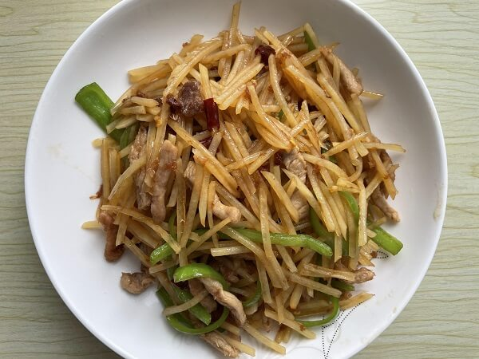
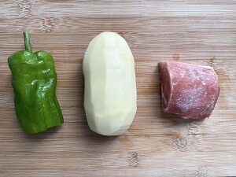
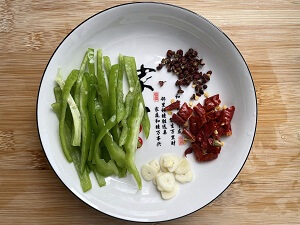
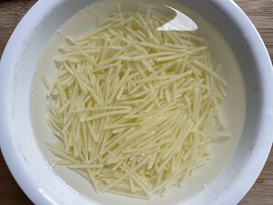
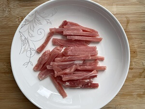
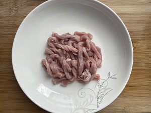
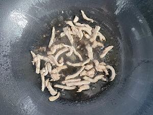
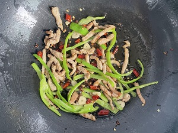
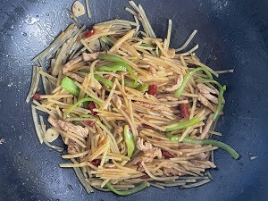
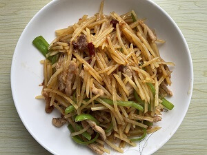

食材用料
| 食材 | 数量 |
|---|---|
| 土豆 | 250克 |
| 猪肉 | 120克 |
| 油 | 适量 |
| 青椒 | 适量 |
| 蒜 | 适量 |
| 干辣椒 | 适量 |
| 花椒 | 适量 |
| 盐 | 适量 |
| 生抽 | 适量 |
做法步骤
| 图片 | 步骤 |
|---|---|
|  | 1. 准备食材 |
|  | 2. 青椒切条，蒜切片，和辣椒圈花椒装起来 |
|  | 3. 土豆切成丝，冲洗一遍去掉淀粉，加清水泡防止变色 |
|  | 4. 猪肉切成丝 |
|  | 5. 肉丝解冻，捏去多余水分 |
|  | 6. 热锅热油，油冒烟下肉丝爆香翻炒（肉丝有水注意锅里油乱蹦） |
|  | 7. 放入青椒调料等，翻炒爆香 |
 | 8. 放入土豆丝翻炒均匀，加入生抽、盐后翻炒均匀入味 |
|  | 9. 收锅 |
|  | 10. 装盘 |